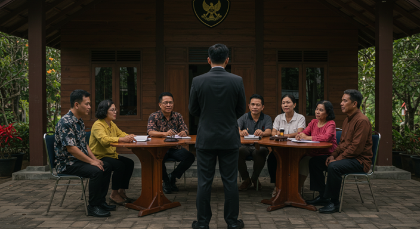

Mediasi Sengketa di Indonesia: Solusi Tanpa Harus ke Pengadilan

Jika Anda menghadapi masalah dengan pihak lain dan ingin menyelesaikannya secara damai tanpa melalui proses pengadilan, mediasi bisa menjadi solusi yang tepat. Mediasi adalah proses penyelesaian sengketa yang melibatkan pihak ketiga yang netral untuk membantu dua belah pihak mencapai kesepakatan yang saling menguntungkan. Artikel ini akan membahas mengapa mediasi adalah pilihan yang lebih baik dan bagaimana Anda bisa melakukannya di wilayah Brebes, Tegal, atau Purwokerto.
Apa Itu Mediasi?
Mediasi adalah cara penyelesaian sengketa yang melibatkan pihak ketiga yang netral untuk membantu pihak yang bersengketa mencari solusi bersama. Dalam proses mediasi, mediator tidak memberikan keputusan, melainkan membantu kedua belah pihak untuk berkomunikasi dan menemukan kesepakatan yang adil. Proses ini lebih cepat, lebih murah, dan lebih aman dibandingkan dengan proses hukum di pengadilan.
Keuntungan Mediasi Dibandingkan Pengadilan
Biaya Lebih Rendah Mediasi biasanya jauh lebih murah dibandingkan dengan membawa masalah ke pengadilan. Di wilayah seperti Brebes, Tegal, atau Purwokerto, mediasi bisa mengurangi biaya hukum yang diperlukan untuk proses pengadilan.
Proses Cepat dan Efisien Proses pengadilan bisa memakan waktu bertahun-tahun, sedangkan mediasi seringkali hanya membutuhkan beberapa sesi untuk mencapai kesepakatan.
Kerahasiaan Terjaga Mediasi memberikan ruang yang lebih privat bagi kedua belah pihak untuk berdiskusi dan mencari solusi tanpa sorotan publik.
Mediasi di Wilayah Brebes, Tegal, dan Purwokerto
Jika Anda tinggal di wilayah Brebes, Tegal, atau Purwokerto, Anda bisa mencari mediator lokal yang berpengalaman dalam menyelesaikan sengketa keluarga, harta gono gini, atau masalah lainnya. Banyak lembaga dan pengacara yang menawarkan layanan mediasi di daerah-daerah tersebut. Anda bisa mencari mediator yang sudah berlisensi atau yang memiliki pengalaman dalam jenis sengketa yang Anda hadapi. Jika butuh bantuan konsultasikan kepada kami gratis lewat WA di 081330723891 Atau 081330723891